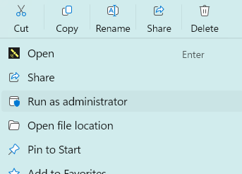
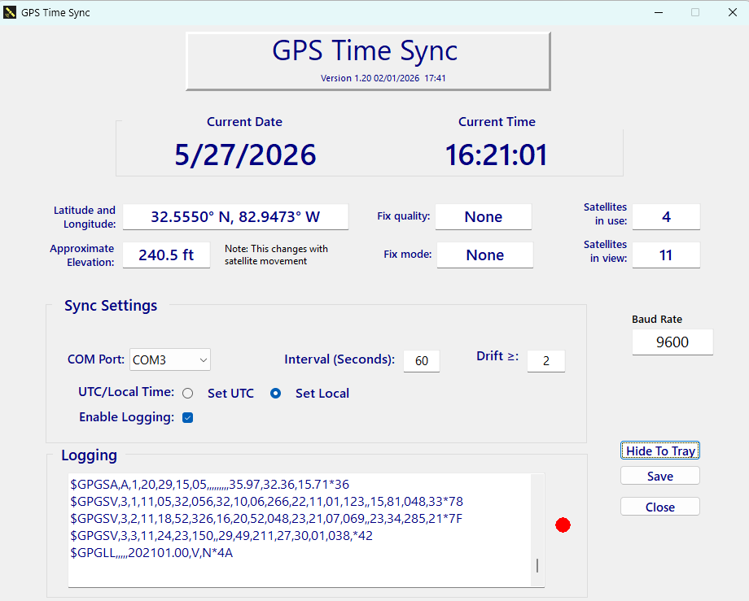

User Help
Version 1.20
GPS Time Sync is a Windows utility for synchronizing the computer clock from a GPS receiver.
GPS Time Sync reads NMEA time data from a GPS receiver and uses it to keep the Windows system clock accurate. The application was written for use with a VK-172 USB GPS dongle.
| Feature | Purpose |
|---|---|
| GPS receiver detection | Looks for the VK-172 GPS dongle and selects the matching COM port when possible. |
| Manual COM setup | Allows manual COM port selection when automatic detection is not available. |
| UTC or local time | Can set Windows time as UTC or local time. |
| Drift correction | Updates the clock when the difference exceeds the configured drift threshold. |
| Logging | Records GPS data and time-change messages for troubleshooting. |

Note: GPS reception may take a few moments after the receiver is connected.
The main window shows GPS position, fix status, satellite status, current time, sync settings, and the log window.

| Area | Description |
|---|---|
| Latitude and Longitude | Shows current GPS position when a valid fix is available. |
| Fix quality | Shows GPS or DGPS quality information. |
| Fix mode | Shows whether the receiver has valid GPS data. |
| Satellites in use | Shows the number of satellites used for the current fix. |
| Satellites in view | Shows visible satellites reported by the receiver. |
| Approximate elevation | Shows GPS elevation. This value can fluctuate with satellite movement. |
| Current Time | Shows the GPS-derived time in the selected local or UTC mode. |
| Logging | Shows incoming NMEA data and application messages. |
GPS Time Sync is designed for a VK-172 USB GPS dongle. When the program starts, it attempts to detect the receiver and select the correct COM port.
Confirm the selected COM port and baud rate, then click Save.
| Setting | Use |
|---|---|
| COM Port | The serial port assigned to the GPS receiver. |
| Baud Rate | The receiver speed. Use 9600 unless your device requires another value. |
| Interval (Seconds) | How often GPS Time Sync compares the Windows clock to GPS time. |
| Drift >= | The allowed difference, in seconds, before the clock is corrected. |
| Set UTC | Sets Windows system UTC from GPS UTC. |
| Set Local | Sets Windows local time using GPS UTC converted through Windows time-zone rules. |
| Enable Logging | Shows and records GPS/NMEA diagnostic data. |
Important: Updating Windows time may require administrator rights.
Click Save after changing the COM port, baud rate, sync interval, drift threshold, UTC/local mode, or logging option.
Save applies the selected values and attempts to reopen the GPS serial port using the current COM port and baud rate.
The application will start and automatically hide to tray. You may also click Hide To Tray to keep GPS Time Sync running in the background and hidden after you have made changes.. The tray icon indicates that the program is still active.
Click the tray icon to restore the main window.
Logs help diagnose GPS receiver, COM port, and time synchronization problems. Logs are not really necessary unless you want to review the data periodically. The log may be turned off without any adverse effects.
| Log | Purpose |
|---|---|
| Logging window | Shows incoming GPS/NMEA lines and application status while the app is running. |
| GPSTimeChange.log | Records application startup, shutdown, settings changes, and time correction messages. |
| gps_sync.log | May be present in builds that write additional GPS synchronization diagnostics. |
Logs are normally stored beside the executable.
This is normal. GPS elevation can fluctuate as satellite geometry changes.
| File | Description |
|---|---|
| GPSTimeSync.exe | Main application executable. |
| gps_settings.ini | Saved application settings, when present. |
| GPSTimeChange.log | Application and time-change log. |
| EULA.txt | License terms. |
| Help folder | Application help files. |